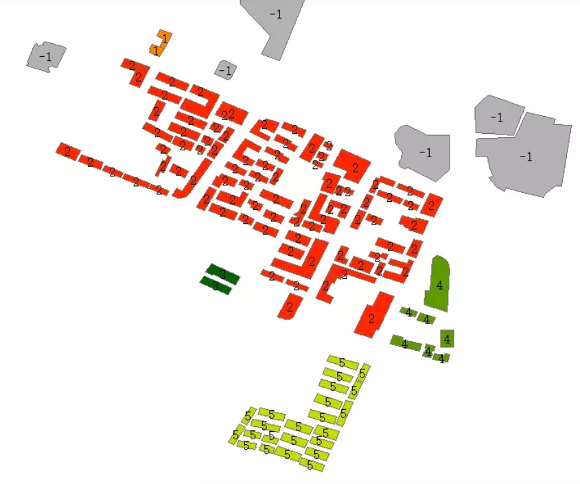
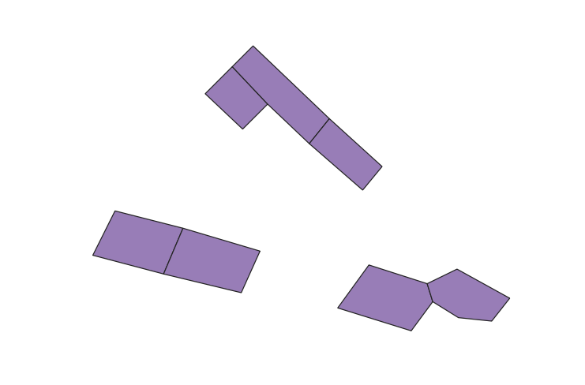
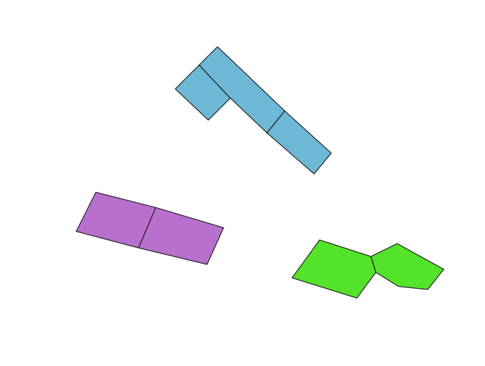
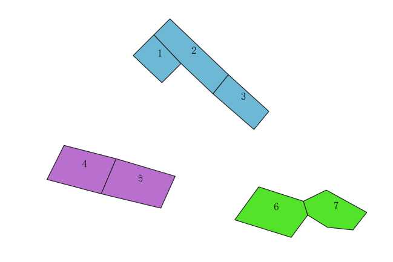
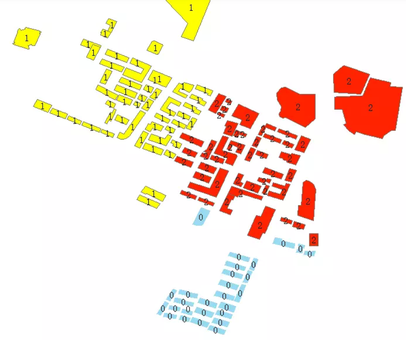
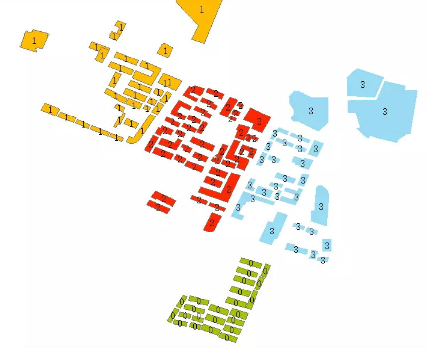
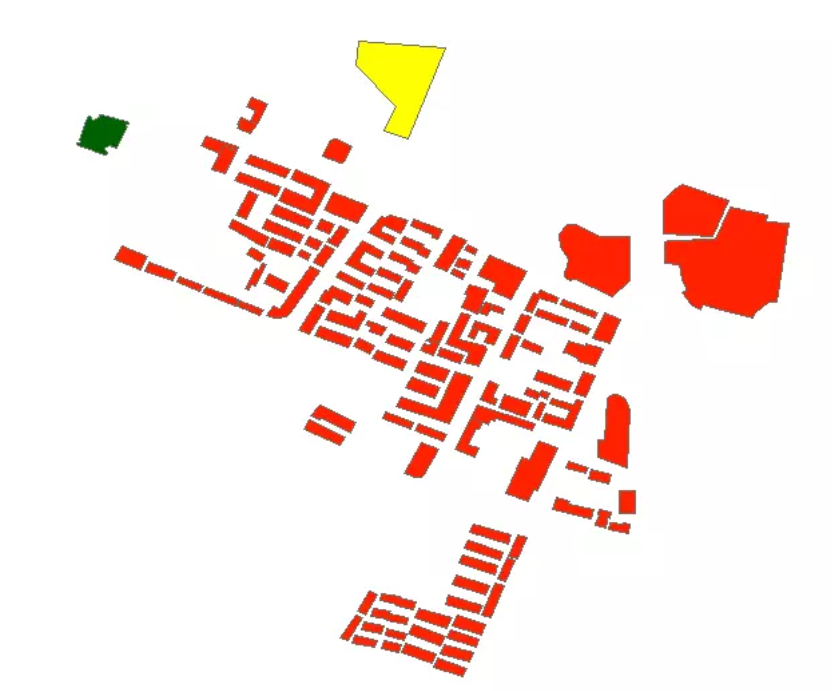
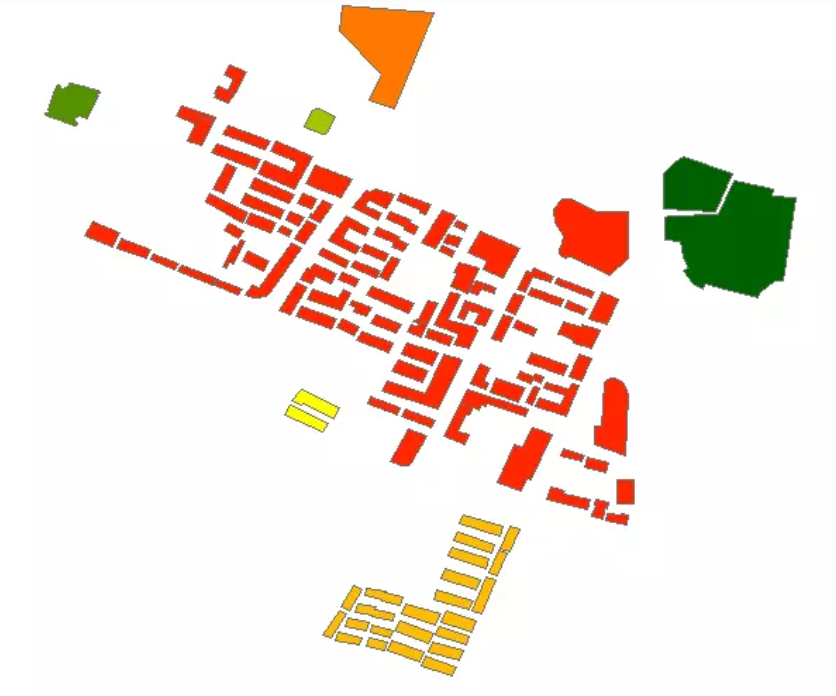

ST_ClusterDBSCAN
方法功能描述
窗口函数，基于DBSCAN算法，返回每一个输入的geometry所对应的聚类id。
函数定义
integer ST_ClusterDBSCAN(geometry winset geom, float8 eps, integer minpoints);
入参：
geom：输入的2d图形。
eps：聚类距离，当两个图形之间距离小于聚类距离，他们被归为一类。
minpoints：规定“簇”中至少包含的图形数量。
返回值：对应的聚类id号，如果输入的geom不属于任何一个“簇”，将返回null。
应用示例
从osm的building图层中截取了一小部分测试房屋建筑数据，基于ST_ClusterDBSCAN方法，根据建筑之间小于20米，且每一簇中至少包含2个图形：

--表坐标系是epsg:4326的经纬度，所以这里是使用0.0002大概模拟20米，非真实距离。
SELECT gid,name, ST_ClusterDBSCAN(geom, eps:= 0.0002, minpoints := 2)
over () AS cid FROM buildings;
gid | name | cid
-----+--------------+-----
1 | |
2 | | 2
3 | | 2
4 | | 2
5 | 大洋百货 |
6 | 商茂世纪广场 | 0
7 | 华威大厦 | 2
8 | 天安保险大厦 | 2
9 | | 2
10 | |
11 | 江苏交通大厦 | 2
12 | 阳光大厦 |
13 | | 0
14 | | 2
15 | | 2
16 | | 2
17 | | 2
18 | | 1
19 | | 1
20 | | 2
21 | | 2
22 | | 2
23 | | 2
24 | | 2
25 | | 2
26 | | 2
27 | | 2
-- More --
cid是每个geom所对应建筑的聚类id号，灰色建筑是与其他图形之间距离大于20米，所以没有归入任何一个“簇”，返回的聚类id是null(cid null的记录都是灰色的)。
ST_ClusterIntersecting
方法功能描述
聚合函数，对于输入的一个geometry集合，集合中图形之间根据“空间相交”进行聚类，最后把聚类结果聚合成一个geometry数组，数组里的每一项代表“一类”。
函数定义
geometry[] ST_ClusterIntersecting(geometry set g);
入参：
g：输入的2d图形集合。
返回值：所有的图形完成聚类，每一类图形都是一个GEOMETRYCOLLECTION（图形集合）对象，所有类都塞入一个geometry数组里并返回结果。
应用示例
示例数据示意图如下：
 先构造测试数据：
create table building2(
gid serial primary key,
name text,
geom geometry(Polygon,4326)
);
insert into building2(geom) values (ST_GeomFromText('POLYGON((118.77376608689 32.0424742122357,118.774542742962 32.0416518705121,118.773994515147 32.0411036426964,118.773172173423 32.0418802987687,118.77376608689 32.0424742122357))',4326));
insert into building2(geom) values (ST_GeomFromText('POLYGON((118.774222943403 32.0429310687489,118.775898083951 32.0413320709528,118.775456455989 32.0407838431371,118.774542742962 32.0416518705121,118.77376608689 32.0424742122357,118.774222943403 32.0429310687489))',4326));
insert into building2(geom) values (ST_GeomFromText('POLYGON((118.775898083951 32.0413320709528,118.777055453785 32.0402813009728,118.776629054372 32.0397635302578,118.775456455989 32.0407838431371,118.775898083951 32.0413320709528))',4326));
insert into building2(geom) values (ST_GeomFromText('POLYGON((118.771192461866 32.0393066737446,118.772684859809 32.0389259599839,118.772258460397 32.0379208756551,118.770705148252 32.0383320465169,118.771192461866 32.0393066737446))',4326));
insert into building2(geom) values (ST_GeomFromText('POLYGON((118.772258460397 32.0379208756551,118.772684859809 32.0389259599839,118.774375228908 32.0384234178194,118.773964058046 32.0375097047933,118.772258460397 32.0379208756551))',4326));
insert into building2(geom) values (ST_GeomFromText('POLYGON((118.776766111326 32.0381188468106,118.778045309563 32.0377076759488,118.778167137966 32.0373117336375,118.777695052903 32.0366721345192,118.776080826556 32.0371746766835,118.776766111326 32.0381188468106))',4326));
insert into building2(geom) values (ST_GeomFromText('POLYGON((118.778700137232 32.0380274755081,118.779857507065 32.0373878763897,118.779461564754 32.0368853342252,118.778730594333 32.0369614769774,118.778167137966 32.0373117336375,118.778045309563 32.0377076759488,118.778700137232 32.0380274755081))',4326));
聚类结果示意图如下： 
执行聚类：
select st_astext(unnest(ST_ClusterIntersecting(geom))) from building2;
st_astext
-------------------------------------------------------------------------------------------------------------------------------------------------------------------------------------------------------------------------------------------------------------------------------------------------------------------------------------------------------------------------------------------------------------------------------------------------------------------------------------------------------------------------------------------------------------------------------------------------------------------
GEOMETRYCOLLECTION(POLYGON((118.77376608689 32.0424742122357,118.774542742962 32.0416518705121,118.773994515147 32.0411036426964,118.773172173423 32.0418802987687,118.77376608689 32.0424742122357)),POLYGON((118.774222943403 32.0429310687489,118.775898083951 32.0413320709528,118.775456455989 32.0407838431371,118.774542742962 32.0416518705121,118.77376608689 32.0424742122357,118.774222943403 32.0429310687489)),POLYGON((118.775898083951 32.0413320709528,118.777055453785 32.0402813009728,118.776629054372 32.0397635302578,118.775456455989 32.0407838431371,118.775898083951 32.0413320709528)))
GEOMETRYCOLLECTION(POLYGON((118.771192461866 32.0393066737446,118.772684859809 32.0389259599839,118.772258460397 32.0379208756551,118.770705148252 32.0383320465169,118.771192461866 32.0393066737446)),POLYGON((118.772258460397 32.0379208756551,118.772684859809 32.0389259599839,118.774375228908 32.0384234178194,118.773964058046 32.0375097047933,118.772258460397 32.0379208756551)))
GEOMETRYCOLLECTION(POLYGON((118.776766111326 32.0381188468106,118.778045309563 32.0377076759488,118.778167137966 32.0373117336375,118.777695052903 32.0366721345192,118.776080826556 32.0371746766835,118.776766111326 32.0381188468106)),POLYGON((118.778700137232 32.0380274755081,118.779857507065 32.0373878763897,118.779461564754 32.0368853342252,118.778730594333 32.0369614769774,118.778167137966 32.0373117336375,118.778045309563 32.0377076759488,118.778700137232 32.0380274755081)))
(3 行记录)
使用问题
ST_ClusterIntersecting是个聚合函数，聚类的结果最后是一个geometry[]类型，没有任何属性字段，有时候我们其实聚类后，想要获取聚类图形结果与属性关系，比如我们没办法从ST_ClusterIntersecting函数的结果中输出对应的gid或者name等其他更多信息。
解决方法目前只能通过图形之间的关系去解决。
第一步：给原图形新增一列，存储一个必须在原图形内部的点：
alter table building2 add column centroid geometry(point,4326);
update building2 set centroid=ST_PointOnSurface(geom);
第二步：给聚类函数返回一个随机的聚类id：
create extension "uuid-ossp";
--聚类中的每一组，都被分配了一个随机的聚类id
create table temp_ClusterIntersecting(
cid uuid,
geom geometry
);
insert into temp_ClusterIntersecting select uuid_generate_v4(),unnest(ST_ClusterIntersecting(geom)) from building2;
第三步：返回要素id和对应聚类id：

select b.gid,a.cid a from
temp_ClusterIntersecting a,
building2 b where st_intersects(b.centroid,a.geom);
gid | cid
-----------------------------------
1 | "d0d3a0db-41e4-4858-a98a-3279cf776fce"
2 | "d0d3a0db-41e4-4858-a98a-3279cf776fce"
3 | "d0d3a0db-41e4-4858-a98a-3279cf776fce"
4 | "94c281e0-4667-4557-88ab-8ca927ebfe94"
5 | "94c281e0-4667-4557-88ab-8ca927ebfe94"
6 | "86daef2f-5cae-4a65-8208-433bf0c525e0"
7 | "86daef2f-5cae-4a65-8208-433bf0c525e0"
也可以合起来写：
select b.gid,a.cid from
(select uuid_generate_v4() as cid,unnest(ST_ClusterIntersecting(geom)) as geom from building2) a,
(select gid,ST_PointOnSurface(geom) as centroid from building2) b where st_intersects(b.centroid,a.geom);
gid | cid
-----------------------------------
1 | "d0d3a0db-41e4-4858-a98a-3279cf776fce"
2 | "d0d3a0db-41e4-4858-a98a-3279cf776fce"
3 | "d0d3a0db-41e4-4858-a98a-3279cf776fce"
4 | "94c281e0-4667-4557-88ab-8ca927ebfe94"
5 | "94c281e0-4667-4557-88ab-8ca927ebfe94"
6 | "86daef2f-5cae-4a65-8208-433bf0c525e0"
这样，通过gid能关联得到每个记录对应的其他更多字段信息，通过cid知道哪些记录是一组的等其他操作。
注意：关于join和空间查询性能不是本节主要阐述重点，本节提出的方案是理论可行方案，但是基于实际项目和数据，存在优化空间，需要根据其他postgis优化方案进行处理。
ST_ClusterKMeans
方法功能描述
窗口函数，基于K-means算法，返回每一个输入的geometry所对应的聚类id。
函数定义
integer ST_ClusterKMeans(geometry winset geom, integer number_of_clusters);
入参：
geom：输入的2d图形。
number_of_clusters：均值中心聚类指定“簇”的数量。
返回值：对应的聚类id号，如果输入的geom不属于任何一个“簇”，将返回null
应用示例
从osm的building图层中截取了一小部分测试房屋建筑数据，基于ST_ClusterKMeans空间聚合，指定分类数量为3，返回每个记录的id和对应的聚类id（cid）号：

SELECT gid,ST_ClusterKMeans(geom,3) over () AS cid,geom FROM buildings;
指定分类数量为4：

SELECT gid,ST_ClusterKMeans(geom,4) over () AS cid,geom FROM buildings;
ST_ClusterWithin
方法功能描述
聚合函数，对输入的图形集合，如果图形之间的距离在指定的距离内，则归并为一类。与ST_ClusterIntersecting类似，只是ST_ClusterIntersecting指定是图形必须相交，可以认为距离是0，而ST_ClusterWithin不需要图形之间相交关系，而是说即使图形不相交，但是当图形的距离在所规定的容差内，就可认为他们是一类。
函数定义
geometry[] a(geometry set g, float8 distance);
入参：
g：输入的2d图形集合。
distance：距离容差。
返回值：所有的图形完成聚类，每一类图形都是一个GEOMETRYCOLLECTION（图形集合）对象，所有类都塞入一个geometry数组里并返回结果。
应用示例
从osm的building图层中截取了一小部分测试房屋建筑数据，基于ST_ClusterWithin空间聚类，指定聚类条件是图形间的距离小于50米：

select unnest(ST_ClusterWithin(geom, 0.0005)) geom from buildings;
指定聚类条件是图形间的距离小于30米：

select unnest(ST_ClusterWithin(geom, 0.0003)) geom from buildings;
使用问题
ST_ClusterWithin是个聚合函数，聚类的结果最后是一个geometry[]类型，没有任何属性字段，有时候我们其实聚类后，想要获取聚类图形结果与属性关系，比如我们没办法从ST_ClusterWithin函数的结果中输出对应的gid或者name等其他更多信息。
解决方法目前只能通过图形之间的关系去解决。
第一步：给原图形新增一列，存储一个必须在原图形内部的点：
alter table buildings add column centroid geometry(point,4326);
update buildings set centroid=ST_PointOnSurface(geom);
第二步：给聚类函数返回一个随机的聚类id：
create extension "uuid-ossp";
--聚类中的每一组，都被分配了一个随机的聚类id
create table temp_ClusterWithin(
cid uuid,
geom geometry
);
insert into temp_ClusterWithin select uuid_generate_v4(),unnest(ST_ClusterWithin(geom，0.0005)) from buildings;
第三步：返回要素id和对应聚类id：
select b.gid,a.cid a from
temp_ClusterWithin a,
buildings b where st_intersects(b.centroid,a.geom);
gid | cid
-----------------------------------
1 | "d0d3a0db-41e4-4858-a98a-3279cf776fce"
2 | "d0d3a0db-41e4-4858-a98a-3279cf776fce"
3 | "d0d3a0db-41e4-4858-a98a-3279cf776fce"
(More rows)
也可以合起来写：
select b.gid,a.cid from
(select uuid_generate_v4() as cid,unnest(ST_ClusterWithin(geom，0.0005))) as geom from buildings) a,
(select gid,ST_PointOnSurface(geom) as centroid from buildings) b where st_intersects(b.centroid,a.geom);
gid | cid
-----------------------------------
1 | "d0d3a0db-41e4-4858-a98a-3279cf776fce"
2 | "d0d3a0db-41e4-4858-a98a-3279cf776fce"
3 | "d0d3a0db-41e4-4858-a98a-3279cf776fce"
(More rows)
这样，通过gid能关联得到每个记录对应的其他更多字段信息，通过cid知道哪些记录是一组的等其他操作。
注意：关于join和空间查询性能不是本节主要阐述重点，本节提出的方案是理论可行方案，但是基于实际项目和数据，存在优化空间，需要根据其他postgis优化方案进行处理。